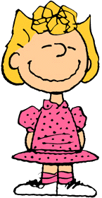

-
Loyal, Imaginative, and Good Natured
Snoopy is an Anthropomorphic Beagle in the comic strip Peanuts by Charles M. Schulz. He can also be found in all of the Peanuts films and television specials. Since his debut on October 4, 1950, Snoopy has become one of the most recognizable and iconic characters in the comic strip and is considered more famous than Charlie Brown in some countries. The original drawings of Snoopy were inspired by Spike, one of Schulz's childhood dogs.


